Guia de uso do painel
Site Marco Mayor
Guia de gerenciamento de publicações e categorias.
Sumário
Um guia prático para manter as publicações do site sempre atualizadas, sem precisar de conhecimento técnico.
Os nomes de botões e campos aparecem em negrito azul, exatamente como estão no painel. Os círculos amarelos numerados nas imagens correspondem às legendas ao lado.
Capítulo 1
O painel administrativo é a área restrita do site onde você gerencia os conteúdos exibidos na seção Atuação em destaque e organiza esses conteúdos por categorias.
Tudo é feito pelo navegador, com formulários simples. Não é preciso instalar programas nem pedir alterações técnicas para as tarefas do dia a dia.
Título, resumo, link da publicação original e imagem opcional.
Publicar, voltar para rascunho, destacar e definir a ordem dos cards.
Criar, renomear, ordenar e excluir categorias, com um ícone para cada uma.
Ver totais, publicações por categoria e as últimas alterações.
| Termo | O que significa |
|---|---|
| Publicação | Cada card exibido na seção Atuação em destaque do site. |
| Categoria | O assunto de uma publicação, como Saúde, Inclusão ou Bairros. As categorias também viram filtros no site. |
| Publicada | A publicação está visível no site. |
| Rascunho | A publicação existe no painel, mas não aparece no site. |
| Destaque | A publicação aparece antes das outras, em um card azul. |
| Atualização do site | Depois que você salva, o site leva alguns instantes para mostrar a mudança (capítulo 7). |
Capítulo 2
O painel fica em um endereço próprio e só pode ser acessado com usuário e senha.
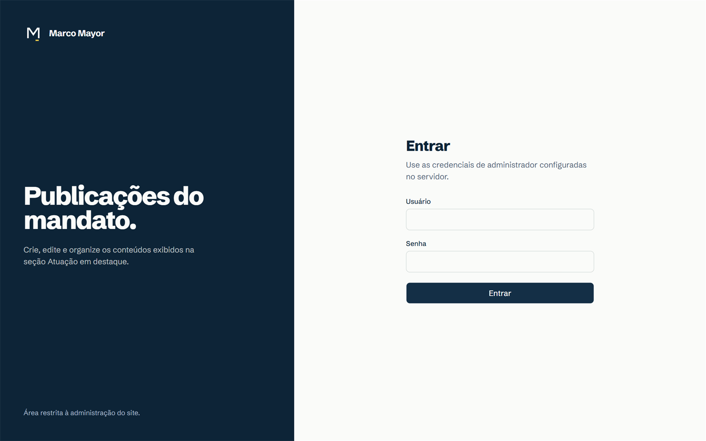
1 2 3Por segurança, o acesso expira depois de algumas horas. Se isso acontecer, basta entrar novamente. Para encerrar o acesso a qualquer momento, use Sair, no rodapé do menu lateral.
Após várias tentativas com senha incorreta, o acesso é bloqueado temporariamente e o painel informa quantos minutos aguardar. Nunca compartilhe sua senha.
Capítulo 3
Ao entrar, você vê um resumo do conteúdo do site. O menu lateral, à esquerda, leva a todas as áreas do painel.
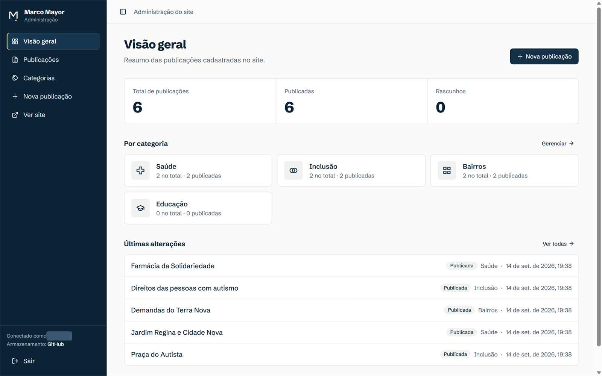
1 2 3 3 4 5 6 7 8O painel também funciona no celular. Nesse caso, o menu lateral fica recolhido: toque no botão de menu, no topo da tela, para abri-lo.
Capítulo 4
Cada publicação é um card da seção Atuação em destaque. Nesta área você cria, altera, organiza e remove esses cards.
Clique em Publicações, no menu lateral. A lista mostra os cards na mesma ordem em que aparecem no site.
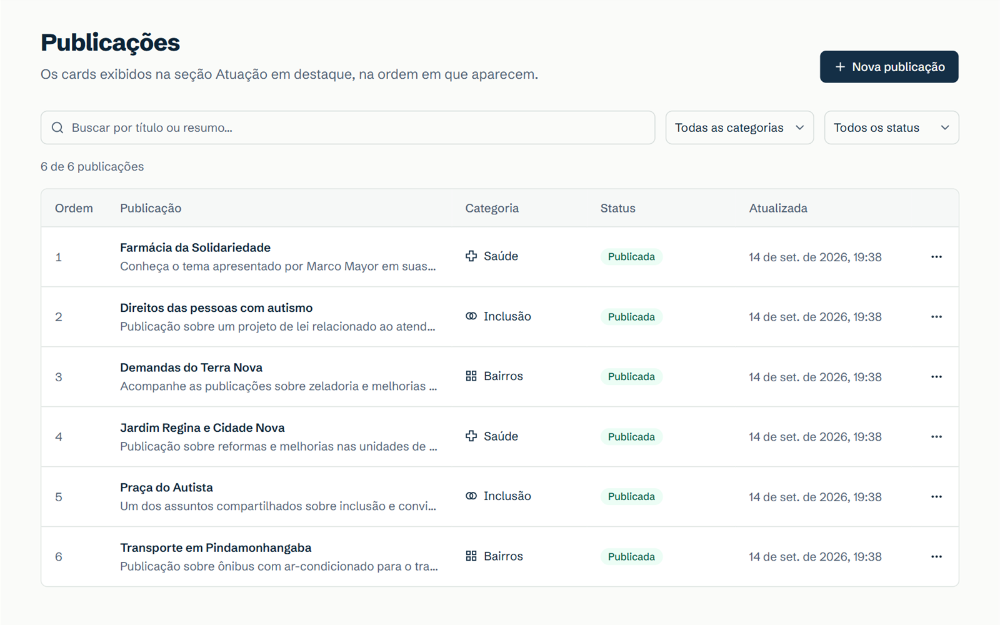
| Elemento | Para que serve |
|---|---|
| Busca | Encontra publicações pelo título ou pelo resumo. |
| Filtros | Todas as categorias e Todos os status limitam a lista a uma categoria ou a publicadas/rascunhos. |
| Colunas | Ordem, título e resumo, categoria, status (Publicada, Rascunho, Destaque, Imagem) e data da última alteração. |
| Título | Clique no título para abrir a publicação e editá-la. |
| Menu de ações (⋯) | Atalhos para editar, publicar, destacar, mudar a ordem e excluir (seções 4.4 a 4.8). |
Clique em Nova publicação, no menu lateral ou no topo da lista. Preencha os campos e acompanhe o resultado na pré-visualização, à direita.
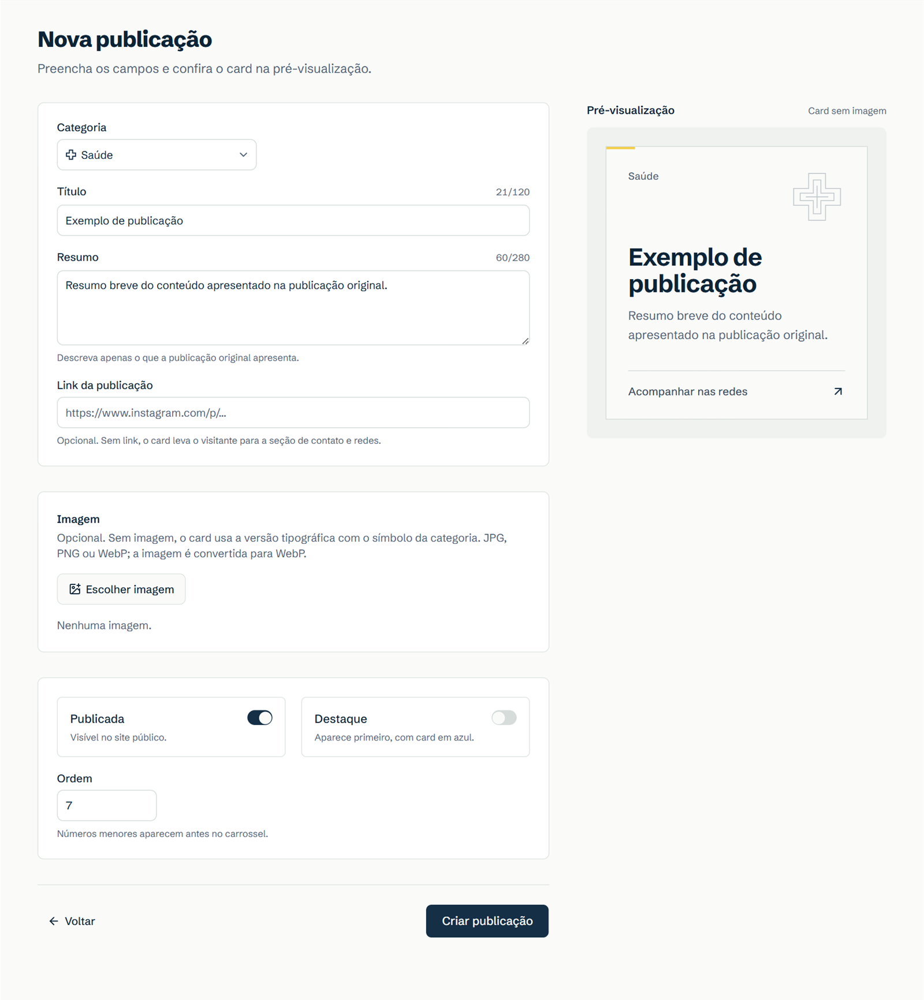
1 2 3 4 5 6 7 8 9Depois de salvar, o painel mostra uma confirmação e abre a tela de edição da nova publicação.
Após salvar uma alteração, aguarde alguns instantes para que o site seja atualizado. A mensagem de confirmação pode dizer que o site será atualizado “após o próximo deploy”, o que significa apenas que uma nova versão do site está sendo preparada automaticamente.
Quando um campo não é aceito, por exemplo um título muito curto ou um link sem https://, o painel mostra Revise os campos destacados e indica o problema logo abaixo do campo. Corrija e salve novamente.
Se você tentar sair da página com alterações ainda não salvas, o navegador pede confirmação. Assim você não perde o que digitou por engano.
A imagem é opcional. Sem imagem, o card usa a versão tipográfica com o símbolo da categoria. Com imagem, a foto aparece no topo do card.
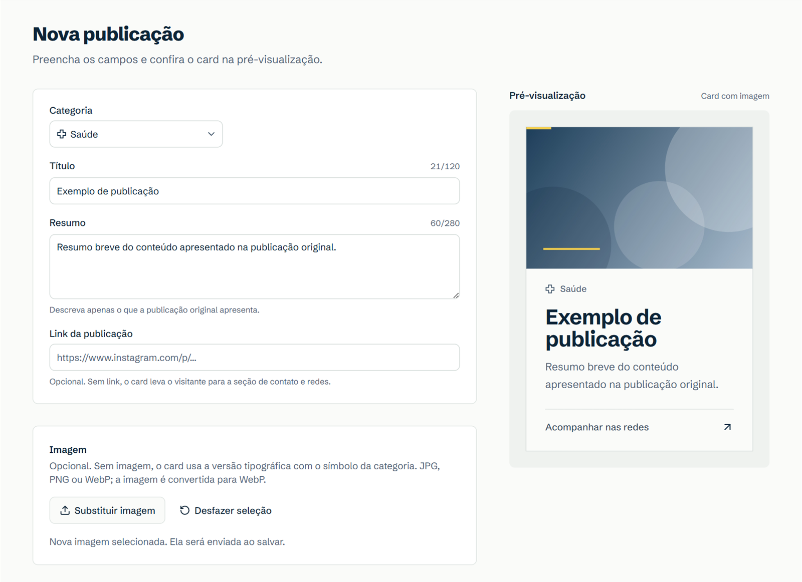
Em uma publicação que já tem imagem, a área Imagem mostra a imagem atual e duas opções:
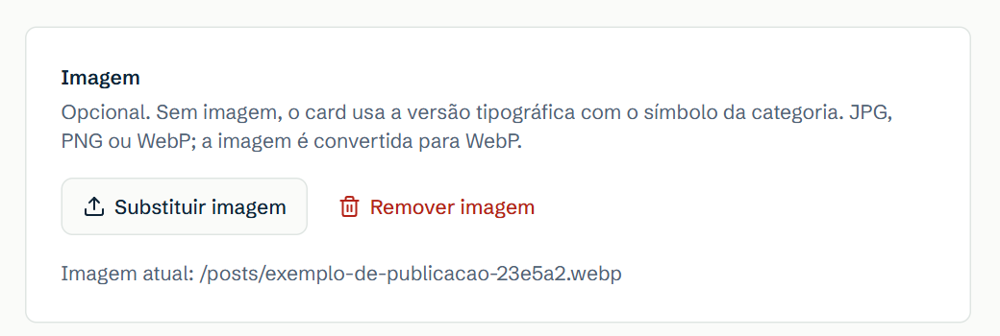
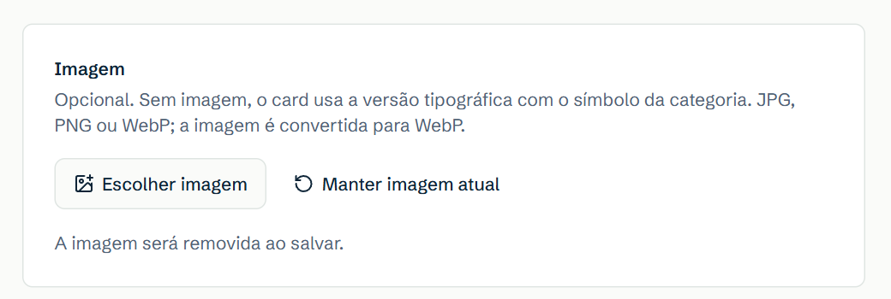
Depois de salvar uma publicação com imagem nova, o painel é atualizado antes de o site terminar de publicar a nova versão. Por isso, a imagem pode não aparecer imediatamente, nem no site nem na pré-visualização do painel. Aguarde alguns instantes e atualize a página. Não é necessário enviar a imagem de novo.
Não há uma medida ou proporção obrigatória. O site ajusta a imagem ao espaço do card e, dependendo do formato da foto, pode cortar parte das bordas. Por isso, sempre confira a pré-visualização antes de salvar.
Uma publicação pode estar Publicada, visível no site, ou em Rascunho, guardada apenas no painel. Rascunhos são úteis para preparar um conteúdo antes de exibi-lo.
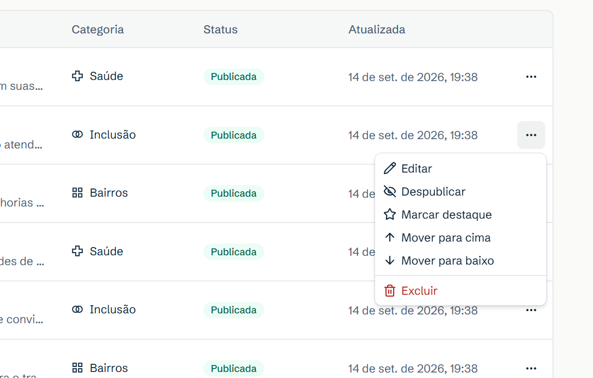
Na tela da publicação, ative ou desative Publicada e clique em Salvar alterações.
Clique em ⋯ na linha da publicação e escolha Publicar ou Despublicar. A alteração é salva na hora.
Enquanto a publicação é um rascunho, a pré-visualização mostra: “Rascunho: este card não aparece no site até ser publicado.”
Uma publicação em destaque:
Para destacar, ative Destaque no formulário e salve, ou use ⋯ › Marcar destaque na lista. Para desfazer, desative a opção ou use Remover destaque.
Mais de uma publicação pode estar em destaque ao mesmo tempo. Entre elas, vale a ordem definida no campo Ordem. Use o recurso com moderação para que o destaque continue chamando atenção.
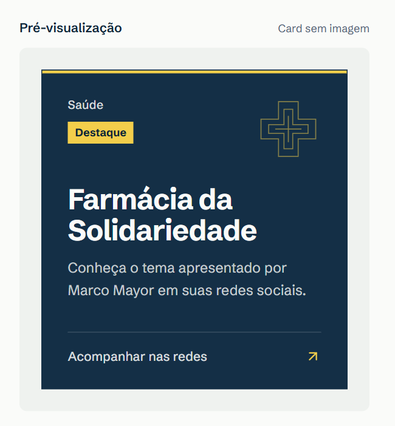
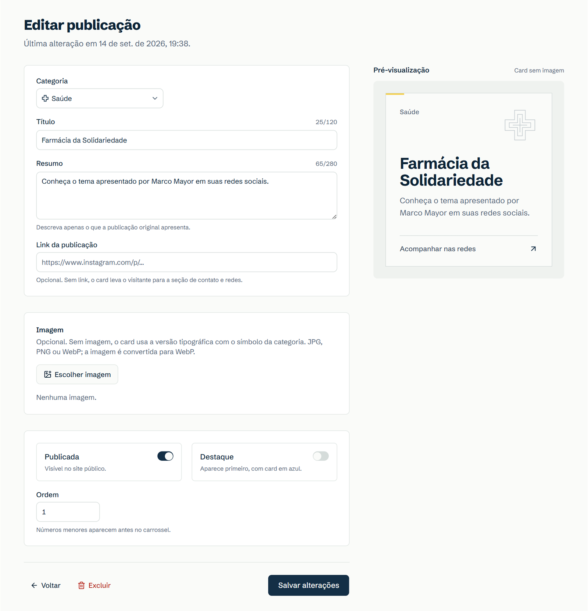
No rodapé do formulário também ficam:
Você também chega à edição clicando em uma publicação da área Últimas alterações, na Visão geral.
No site, as publicações em destaque aparecem primeiro. Em seguida, as demais seguem a ordem numérica: números menores aparecem antes. Há duas formas de mudar a posição:
Na lista, clique em ⋯ e escolha Mover para cima ou Mover para baixo. A publicação troca de lugar com a vizinha e a numeração é reorganizada automaticamente.
No formulário da publicação, informe um número no campo Ordem e salve. Útil para posicionar um card diretamente.
As opções Mover para cima e Mover para baixo só aparecem quando a lista não está filtrada. Se houver busca ou filtro ativo, o painel avisa “Limpe os filtros para reordenar”.
Se a mesma imagem for usada por outra publicação, o painel mantém o arquivo e avisa na própria confirmação.
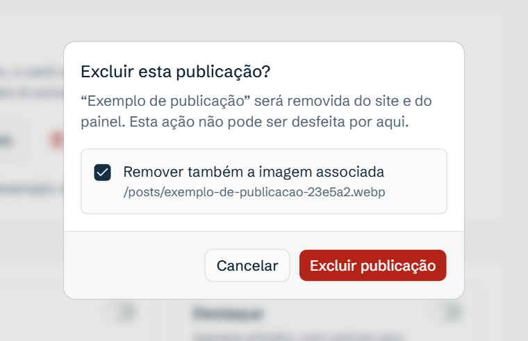
A publicação é removida do site e do painel e não pode ser recuperada pelo painel. Se a intenção é apenas tirar o card do site por um tempo, prefira Despublicar: o conteúdo continua guardado como rascunho.
Capítulo 5
Categorias são os assuntos das publicações. Elas organizam o painel e geram os filtros da seção Atuação em destaque. Inicialmente, o site possui Saúde, Inclusão e Bairros, e novas categorias podem ser criadas a qualquer momento, sem alteração técnica.
Clique em Categorias, no menu lateral. Cada linha mostra o ícone, o nome, quantas publicações usam a categoria e quantas delas estão publicadas.
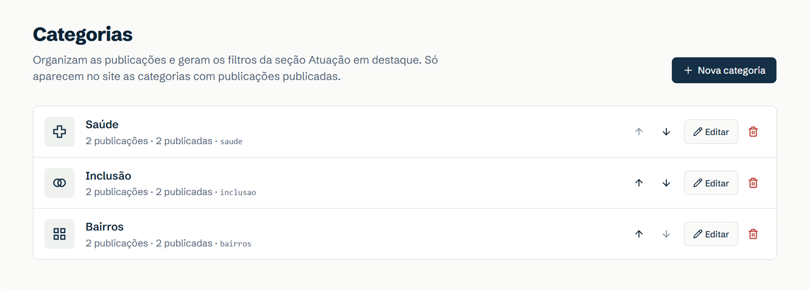
1 2 3 4O texto em letras menores ao lado das contagens (por exemplo, saude) é o identificador interno da categoria. Ele é criado automaticamente e não precisa ser alterado.
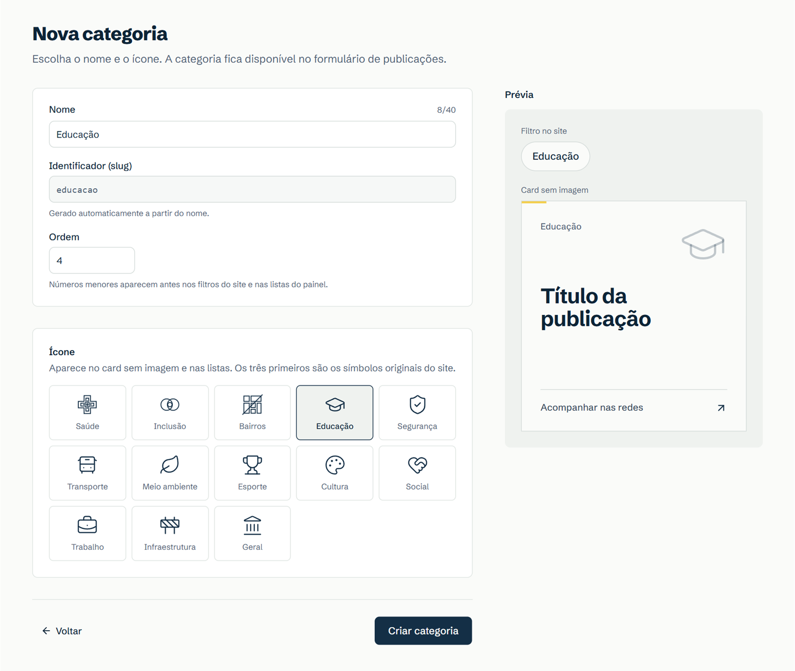
1 2 3 4 5 6A nova categoria passa a aparecer no campo Categoria das publicações. No site, ela aparece como filtro assim que houver ao menos uma publicação publicada nela (capítulo 6).
Os ícones são predefinidos e seguem o estilo visual do site. Basta clicar no desejado; ele fica marcado com uma borda. Não é necessário, nem possível, enviar arquivos de ícone.
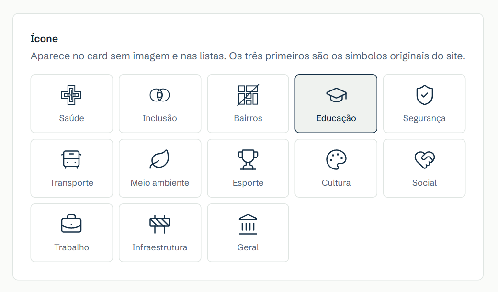
Opções: Saúde, Inclusão, Bairros, Educação, Segurança, Transporte, Meio ambiente, Esporte, Cultura, Social, Trabalho, Infraestrutura e Geral. Escolha o que melhor representa o assunto.
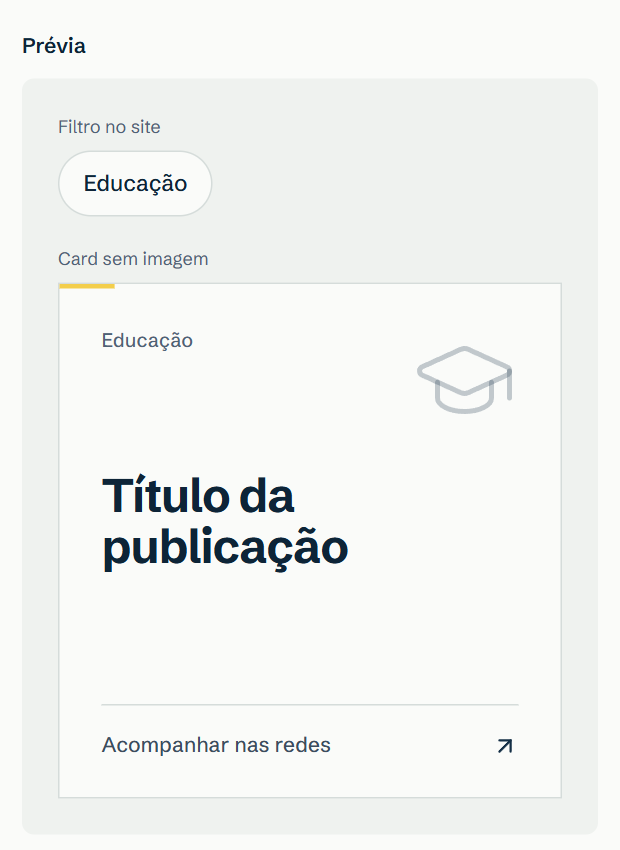
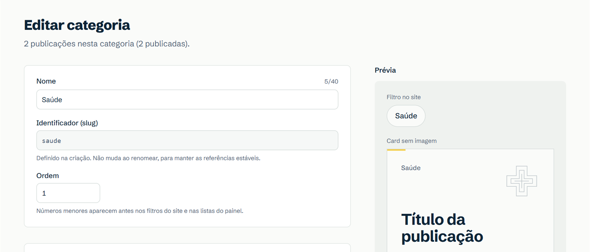
Ao alterar o nome de uma categoria, todas as publicações vinculadas continuam nela e passam a exibir o novo nome automaticamente. O identificador (slug) permanece o mesmo.
A ordem das categorias define a sequência dos filtros no site e das listas no painel. Na lista de Categorias, use as setas de cada linha: a seta para cima sobe a categoria uma posição e a seta para baixo desce. A mudança é salva na hora. Também é possível informar um número no campo Ordem, na edição da categoria.
Uma categoria com publicações não pode ser excluída.
O painel nunca apaga publicações junto com uma categoria. Isso protege o conteúdo contra exclusões acidentais. Publicações em rascunho também contam.
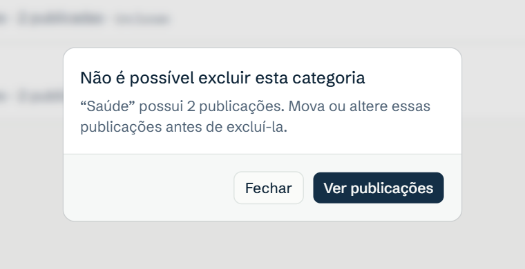
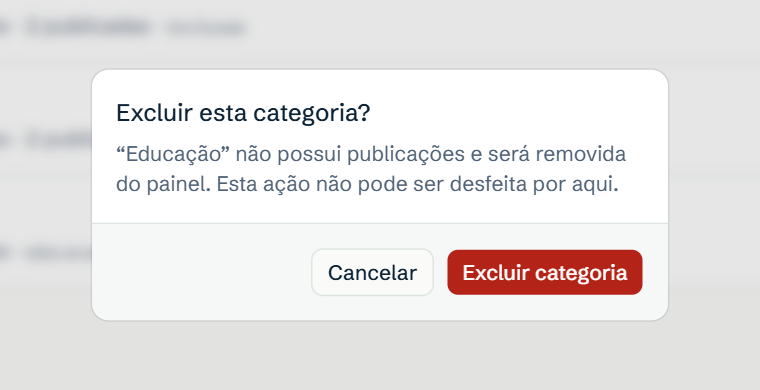
A exclusão é definitiva e não pode ser desfeita pelo painel.
Capítulo 6
Na seção Atuação em destaque, os visitantes podem filtrar os cards por assunto. Esses filtros são criados automaticamente a partir das categorias:
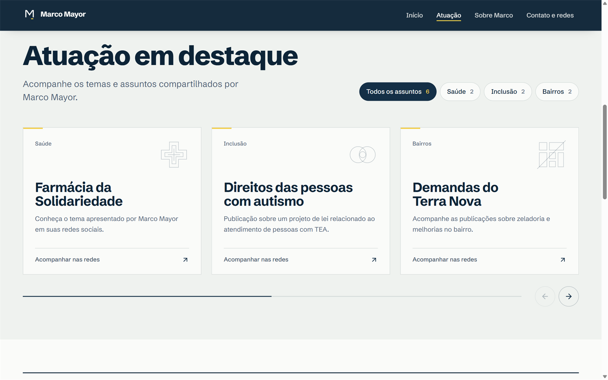
1 2Os filtros seguem a ordem das categorias definida no painel (seção 5.5). O primeiro filtro, “Todos os assuntos”, é fixo e mostra todas as publicações publicadas.
Capítulo 7
Toda alteração salva no painel passa por um processo automático antes de aparecer no site:
Ao salvar, a alteração é registrada e o painel mostra a confirmação.
Uma nova versão do site é preparada automaticamente.
Depois de alguns instantes, a mudança aparece no site público.
Se outra pessoa salvar uma alteração enquanto você edita, o painel mostra “O conteúdo foi alterado por outra sessão. Recarregue a página para ver a versão atual.” Clique em Recarregar e refaça sua alteração. Assim, nenhuma mudança é sobrescrita por engano.
Capítulo 8
Capítulo 9
Salvei, mas ainda não apareceu no site.
Aguarde alguns instantes e atualize a página. O site é atualizado automaticamente depois de cada alteração (capítulo 7).
A imagem não apareceu imediatamente.
É normal: imagens novas só são exibidas depois que o site termina de atualizar. Aguarde e atualize a página, sem enviar a imagem de novo.
Criei uma publicação, mas ela não aparece no site.
Verifique se ela está marcada como Publicada. Rascunhos não aparecem no site. Se estiver publicada, aguarde a atualização.
Não consigo excluir uma categoria.
Ela provavelmente possui publicações vinculadas, inclusive rascunhos. Mova essas publicações para outra categoria e tente novamente (seção 5.6).
Criei uma categoria, mas o filtro não aparece no site.
O filtro só aparece quando a categoria tem pelo menos uma publicação publicada. Depois disso, aguarde a atualização do site.
O painel diz que já existe uma categoria com esse nome.
Os nomes não podem se repetir, mesmo com diferenças de maiúsculas, espaços ou acentos. Use a categoria existente ou escolha outro nome.
As opções “Mover para cima” e “Mover para baixo” sumiram.
Elas ficam ocultas quando há busca ou filtro ativo na lista de publicações. Limpe a busca e os filtros.
Apareceu “O conteúdo foi alterado por outra sessão”.
Outra pessoa salvou uma alteração ao mesmo tempo. Clique em Recarregar e refaça a sua alteração.
A imagem foi recusada.
Use um arquivo JPG, JPEG, PNG ou WebP. Se o arquivo for muito grande, escolha outra imagem ou uma versão menor.
Fui desconectado do painel.
O acesso expira depois de algumas horas, por segurança. Entre novamente com seu usuário e senha.
Esqueci minha senha ou o acesso foi bloqueado.
Após várias tentativas incorretas, aguarde os minutos indicados na tela. Se esqueceu a senha, entre em contato com o responsável técnico ou com o administrador do site.
Manual do Administrador · Site Marco Mayor · Versão 1.0 · Setembro de 2026
Em caso de dúvidas não previstas neste manual, entre em contato com o responsável técnico do site.